Clase 7: Calor de Reacción y Entalpías de Formación
La primera ley aplicada a reacciones químicas: el calor de reacción como diferencia de entalpías, el problema de tener más incógnitas que ecuaciones, y cómo las entalpías de formación en estado estándar lo resuelven.
Temas que cubre
- Procesos exotérmicos y endotérmicos: convenio de signos del calor
- Aplicación de la primera ley al calor de reacción
- de reacción como diferencia entre entalpías de productos y de reactivos
- El problema: cuatro entalpías absolutas desconocidas y una sola ecuación
- Reacciones de formación: definición y ejemplos
- Por qué de reacción no depende de las entalpías de los elementos
- Escala arbitraria: asignar cero a los elementos en su forma más estable
- Estado estándar: 1 atm y 298,15 K
- Entalpía estándar de formación y su tabulación
- Casos de alotropía: vs. , grafito vs. diamante
- Relación entre el calor a presión constante y a volumen constante:
- Dependencia de con la temperatura
Conceptos clave
Exotérmico y endotérmico
Una reacción cambia la temperatura del sistema; recuperar la inicial implica un flujo de calor. Exotérmico (): el sistema entrega calor al entorno. Endotérmico (): el entorno debe suministrar calor al sistema.
El calor de reacción es
Como la mayoría de las reacciones se hacen a presión atmosférica constante, el calor medido es directamente . Y como es extensiva, se suma sobre todas las especies con sus coeficientes estequiométricos.
El problema de las incógnitas
Escribir como diferencia de entalpías molares absolutas deja cuatro incógnitas y una ecuación. Ninguna entalpía absoluta es medible — sólo diferencias. Hay que romper el problema de otro modo.
Reacción de formación
La que produce un mol de un compuesto a partir de sus elementos puros en sus estados estables de agregación. Escribir cada compuesto vía su reacción de formación permite que las entalpías de los elementos se cancelen a ambos lados.
La escala arbitraria
Como de cualquier reacción es independiente de los valores numéricos asignados a los elementos, se les puede asignar cualquier valor conveniente. Se elige cero, a 1 atm y 298,15 K. Todas las entalpías tabuladas cuelgan de esa convención.
Forma más estable
El cero se asigna a la forma más estable del elemento: pero kJ/mol; pero kJ/mol. El estado de agregación importa: y tienen valores distintos.
frente a
La bomba calorimétrica mide a volumen constante (); las tablas están a presión constante (). Sólo difieren en el trabajo que hace la reacción al cambiar el número de moles gaseosas: sólidos y líquidos no cuentan.
Fórmulas fundamentales



Qué hay que entender
- Distinguir qué se midió: un calorímetro a volumen constante entrega , y hay que corregirlo con antes de compararlo con una tabla de .
- El truco central: las entalpías absolutas no son medibles, pero se cancelan al escribir la reacción vía reacciones de formación. Por eso la tabla de resuelve todo.
- sólo para elementos en su forma más estable a 298,15 K y 1 atm. El ozono, el diamante y el azufre monoclínico no valen cero.
- Anotar siempre el estado de agregación: kJ/mol y kJ/mol difieren justo en el calor de vaporización.
- La fórmula es "productos menos reactivos". Invertir el orden invierte el signo — y el signo es la respuesta a si la reacción libera o consume calor.
- Invertir una reacción cambia el signo de ; multiplicarla por un factor multiplica por ese factor. es extensiva.
- Exotérmico : el sistema pierde entalpía y el entorno se calienta.